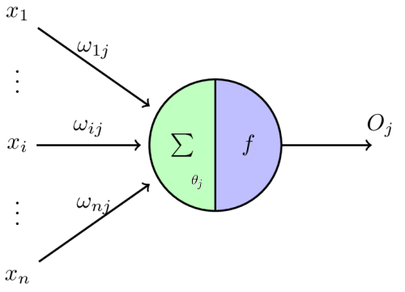
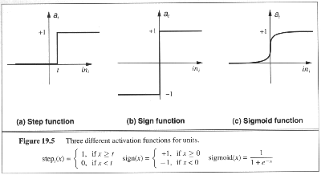
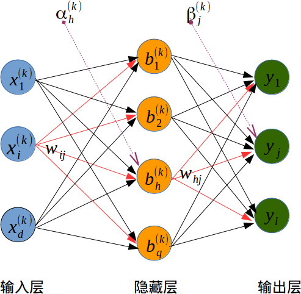

人工神经网络是对人脑完成特定任务的方法的模拟。
神经元
在生物神经网络中，神经元是神经网络的基本单元，树突接收来自其他神经元的传递电信号(电信号有两种：兴奋信号和抑制信号)， 轴突用来传出细胞 体产生的输出电信号。一 个神经元把来自不同树突的兴奋性或抑制性输入信号 （突触后膜电位）累加求和，当膜电位高于阈值，细胞被激活，并通过突触把产生的电信号传递给其他神经细胞。
通过对生物神经元的仿真，建立抽象模型，在模型中，神经元接收来自多个神经元的信息，并把这些输入信号通过待权重的连接（connection）进行传递。神经元通过接受到的总输入值与神经元的阈值相比较，大于阈值，通过激活函数(activation function)处理已产生神经元的输出。

图2 是为纪念McCulloch和Pitts 命名的”M-P神经元模型”
$$O_j=f(\sum_{i=1}^{n}x_{i}w_{ij}-\theta_j)$$
| 符号 | 解释 |
|---|---|
| $x_i$ | 表示来自第个神经元的输入。 |
| $w_{ij}$ | 表示当前神经元来自第个神经元的连接权重。 |
| $\sum$ | 表示求和单元，用于求取各输入信号的加权和（线性组合）。 |
| $\theta_j$ | 表示当前神经元的阈值。 |
| $f$ | 表示激活函数，起映射作用并将神经元输出幅度限制在一定范围内。 |
| $O_j$ | 表示当前神经元的输出 |
常见的激活函数有3种

图3 激活函数图像
- 阶跃函数（step function）
- 分段线性函数（放大系数为1的非线性函数）
- sigmoid函数 （严格单调递增函数）
- 双曲正切函数
感知机
感知机(Perceptron)由两层神经元组成，输入层神经元及输出层神经元。
输入层负责传递输入信号。
只有输出层神经元进行激活函数处理，因此输出层神经元也被称为功能层神经元（function neuron）。
PS: 感知机只有一层功能层神经元，学习能力有限，只能用于线性可分问题。
多层神经网络
误差逆传播(BP)
误差逆传播(BP)(error Back Propagation)，俗称BP神经网络，是一种按误差逆传播算法训练的多层前馈网络，是目前应用最广泛的神经网络模型之一。
BP神经网络主要包括 输入层I，隐藏层H，输出层O
- 输入层仅提供数据输入，无激活函数。
- 在BP神经网络中，输入层和输出层的节点数目都是确定的。
- 激活函数必须处处可导。
对于训练集：$T=\{(x_1,y_1),(x_1,y_1),\dots,(x_n,y_n)\}$
其中,$x_k \in R^d,y_k \in R^l,$即输入示例有$d$个属性，标签有$l$个类别。
对于其中一条训练样本$(x_k,y_k)$，输入层中的一个神经元对应样本的一个属性，即：输入层有个$d$神经元。输出层中的一个神经元对应样本标签的一个类别,即：输出层有$l$个神经元。
激活函数为sigmoid函数$f(x)=\frac{1}{1+e^x}$ ，BP神经网络示意图如下所示：

图4 BP神经网络图像
| 符号 | 解释 |
|---|---|
| $x_{i}^{(k)}$ | 输入层第个神经元的输出,表示样本中的一个属性，$x^{(k)}=[x_{1}^{(k)},x_{2}^{(k)},x_{i}^{(k)},\dots,x_{d}^{(k)},]$ |
| $w_{ih}$ | 神经元和神经元的连接权重 |
| $a_{h}^{(k)}$ | 隐藏层第个神经元的输入,$a_{h}^{(k)}=\sum_{i=1}^{d}x_{i}^{(k)}w_{ih}$ |
| $b_{h}^{(k)}$ | 隐藏层第个神经元的输出,$b_{h}^{(k)}=f(a_{h}^{(k)}-\theta_{h})$ |
| $w_{hj}$ | 神经元和神经元的连接权重 |
| $\beta_{j}^{(k)}$ | 输出层第个神经元的输入,$\beta_{j}^{(k)}=\sum_{h=1}^{q}b_{h}^{(k)}w_{hj}$ |
| $y^{(k)}$ | 表示样本$k$的真实标签 |
| $\hat{y}_{j}^{(k)}$ | 输出层第$j$个神经元的输出,表示样本$k(k \in [1,2,\dots,l])$的类别，$\hat{y}_{j}^{(k)}=f(\beta_{j}^{(k)}-\theta _{j})$ |
训练BP神经网络模型的过程本质上是调整连接权值和阈值，使得训练样本误差最小。
即单个样本训练误差为：$$E^{(k)}=\frac{1}{2}\sum_{j=1}^{l}(y_{j}^{(k)}-\hat{y}_{j}^{(k)})$$
神经网络中权重的更新采用的求解方法是梯度下降(gradient descent)方法，问题转化为求解：
$$\Delta w_{hj} = -\eta \frac{\partial E^{(k)}}{\partial w_{hj}}$$
$$\Delta \theta_{j} = -\eta \frac{\partial E^{(k)}}{\partial \theta_{j}}$$
$$\Delta w_{ih} = -\eta \frac{\partial E^{(k)}}{\partial w_{ih}}$$
$$\Delta \theta_{h} = -\eta \frac{\partial E^{(k)}}{\partial \theta_{h}}$$
$$\frac{\partial E^{(k)}}{\partial w_{hj}} =\frac{\partial E^{(k)}}{\partial \hat{y}_{j}^{(k)}}\frac{\partial \hat{y}_{j}^{(k)}}{\partial \beta_{j}^{(k)}}\frac{\partial \beta_{j}^{(k)}}{\partial w_{hj}}$$ $$\frac{\partial E^{(k)}}{\partial w_{hj}} =-(y_{j}^{(k)}-\hat{y}_{j}^{(k)})[\hat{y}_{j}^{(k)}(1-\hat{y}_{j}^{(k)})](b_{h}^{(k)})$$
$$ \frac{\partial E^{(k)}}{\partial \theta_{j}} = \frac{\partial E^{(k)}}{\partial \hat{y}_{j}^{(k)}} \frac{\partial \hat{y}_{j}^{(k)}}{\partial \theta_{j}}$$ $$\frac{\partial E^{(k)}}{\partial \theta_{j}}=(y_{j}^{(k)}-\hat{y}_{j}^{(k)})[\hat{y}_{j}^{(k)}(1-\hat{y}_{j}^{(k)})]$$
$$\frac{\partial E^{(k)}}{\partial w_{ih}}=\frac{\partial E^{(k)}}{\partial b_{h}^{(k)}}\frac{\partial b_{h}^{(k)}}{\partial \alpha_{h}^{(k)}}\frac{\partial \alpha_{h}^{(k)}}{\partial w_{ih}}$$ $$e_{h} = \frac{\partial E^{(k)}}{\partial b_{h}^{(k)}}\frac{\partial b_{h}^{(k)}}{\partial \alpha_{h}^{(k)}}=\frac{\partial E^{(k)}}{\partial \beta_{j}^{(k)}}\frac{\partial \beta_{j}^{(k)}}{\partial b_{h}^{(k)}}\frac{\partial b_{h}^{(k)}}{\partial \alpha_{h}^{(k)}}=[-(y_{j}^{(k)}-\hat{y}_{j}^{(k)})[\hat{y}_{j}^{(k)}(1-\hat{y}_{j}^{(k)})](w_{hj})]b_{h}^{(k)}(1-b_{h}^{(k)})$$ $$\frac{\partial E^{(k)}}{\partial w_{ih}}=e_{h}(x_{i}^{(k)})$$
$$\frac{\partial E^{(k)}}{\partial \theta_{h}}=\frac{\partial E^{(k)}}{\partial b_{h}^{( k)}}\frac{\partial b_{h}^{( k)}}{\partial \theta_{h}}$$ $$\frac{\partial E^{(k)}}{\partial \theta_{h}}=(y_{j}^{(k)}-\hat{y}_{j}^{(k)})[\hat{y}_{j}^{(k)}(1-\hat{y}_{j}^{(k)})](w_{hj})b_{h}^{(k)}(1-b_{h}^{(k)}) =-e_{h}$$
综上所述，即
$$\Delta w_{hj} = -\eta \frac{\partial E^{(k)}}{\partial w_{hj}}=-\eta g_{j}$$
$$\Delta \theta_{j} = -\eta \frac{\partial E^{(k)}}{\partial \theta_{j}}=\eta e_{h}x_{i}^{(k)}$$
$$\Delta w_{ih} = -\eta \frac{\partial E^{(k)}}{\partial w_{ih}}=-\eta e_{h}x_{i}^{(k)}$$
$$\Delta \theta_{h} = -\eta \frac{\partial E^{(k)}}{\partial \theta_{h}}=\eta e_{h}$$
其中，
$g_{j}= -(y_{j}^{(k)}-\hat{y}_{j}^{(k)})[\hat{y}_{j}^{(k)}(1-\hat{y}_{j}^{(k)})](b_{h}^{(k)}),e_{h}=[-(y_{j}^{(k)}-\hat{y}_{j}^{(k)})[\hat{y}_{j}^{(k)}(1-\hat{y}_{j}^{(k)})](w_{hj})]b_{h}^{(k)}(1-b_{h}^{(k)})$
BP训练过程
- 初始化所有的权值$w_{ih},w_{hj}$和神经元阈值$\theta_{h},\theta_{j}$
- 计算值
- 计算$\hat{y}$
- 计算$g_j$
- 计算$e_h$
更新所有的权值和阈值
循环（1-3），一直到循环停止条件。
自组织映射（SOM）
- 卷积神经网络可以把中间一层的输出作为数据的另一种表达形式，中间输出可作为神经网络识别的特征，基于该特征可以进行进一步的相似度比较
- 卷积神经网络参数众多，需要大规模数据来训练
卷积神经网络(CNN)
CNN(Convolution Neural Network)
名词解析
| 英文单词 | 中文解析 |
|---|---|
| Convolution Neural Network | 卷积神经网络 |
| neural network | 神经网络 |
| activation function | 激活函数 |
| hyperbolic tangen | 双曲正切函数 |
| bias units | 偏置顶 |
| activation | 激活值 |
| forward propagation | 前向传播 |
| feedforward neural network | 前馈神经网络 |
| converge | 收敛 |